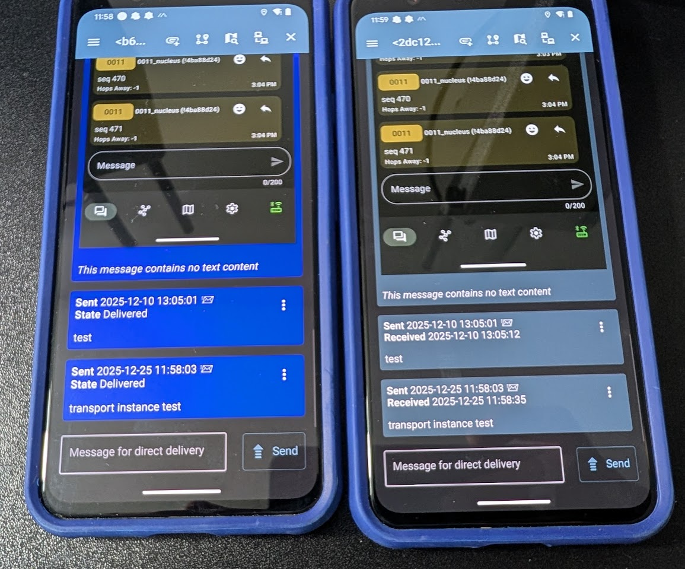
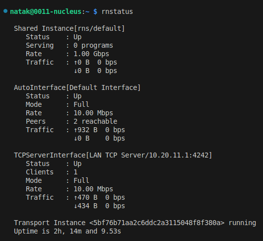
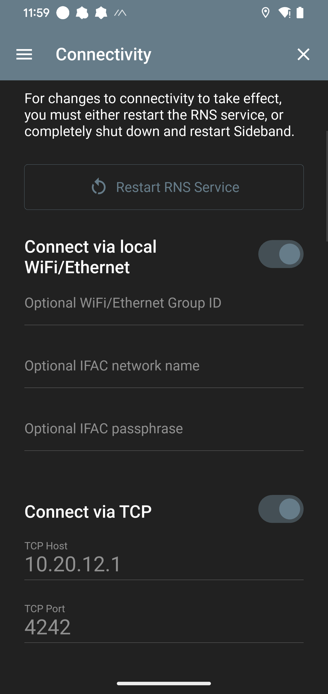
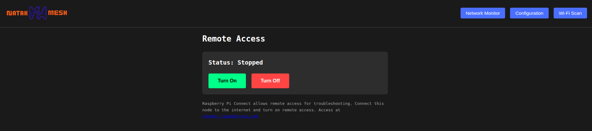

Secure Communications
No cloud accounts. No call logs. No metadata collection. The Nucleus runs multiple independent encrypted communication paths — if one is compromised or blocked, others keep working. Nothing leaves the mesh unless you explicitly send it out.

Reticulum — Encrypted Messaging
Reticulum provides end-to-end encrypted messaging with forward secrecy and store-and-forward delivery. Every Nucleus node runs Reticulum transport, creating a decentralized messaging backbone across the mesh.
Use Sideband or Columba from a phone, or MeshChat or NomadNet from a connected PC or laptop — point it at the node and go. Reticulum's own cryptography means the transport doesn't matter — it's encrypted end-to-end regardless of whether it's riding on the WiFi mesh, an Ethernet cable, a VPN tunnel, or a standard internet connection.
With additional configuration, Reticulum can also ride on HF radios, VHF radios, or LoRa RNodes, extending reach well beyond IP networks.
- End-to-end encrypted with forward secrecy
- Store-and-forward delivery — messages queue when the recipient is offline
- Packets don't reveal source addresses — destinations are cryptographic hashes, not assigned addresses
- Transport-agnostic: WiFi mesh, Ethernet, VPN, internet, HF/VHF, LoRa RNodes
- Client apps: Sideband, Columba (phone), MeshChat, NomadNet (PC/laptop)
- Every node runs as a transport instance — the mesh itself is the infrastructure


Tailscale — Connect Remote Nodes
When internet is available, Tailscale connects geographically separated nodes over WireGuard. Login and done. All services — Jami calls, Reticulum messaging, ATAK, everything — route transparently over the tunnel like the remote node is sitting on the same local mesh.
This turns the Nucleus from a local mesh into a distributed system. A node in one city can talk to a node in another as if they were next to each other. The applications don't care which transport is underneath — they just see another peer on the network.
- Tailscale/WireGuard connects remote nodes — login and done
- All mesh services route transparently over the tunnel
- Jami calls work across tunnels — add remote tunnel IPs to the OpenDHT bootstrap config
- Reticulum peers over TCP — add a TCPClientInterface pointing at the remote node's Tailscale IP
- Both are encrypted pipes — the applications don't care which transport is underneath

Encrypted Mesh Transport
The WiFi mesh itself runs 802.11s with WPA3 — traffic between nodes is encrypted at the link layer before any application-level encryption even touches it. No access point, no central controller, self-healing topology that reroutes around failures automatically.
This means every communication channel on the Nucleus has at least two layers of encryption: the mesh transport layer (WPA3) and the application layer (Reticulum's own crypto, Jami's TLS, Meshtastic's AES-256). Most traffic has three layers when tunneled over WireGuard.
- 802.11s with WPA3 — link-layer encryption on the mesh itself
- Self-healing topology — reroutes around node failures automatically
- No central controller or access point for the mesh backbone
- Multiple encryption layers: transport (WPA3) + application (Reticulum/Jami/Meshtastic) + optional tunnel (WireGuard)

What This Adds Up To
The Nucleus is not a single encrypted channel — it's a stack of independent encrypted communication paths that operate simultaneously. Reticulum for messaging, WireGuard for tunneling, WPA3 for the mesh transport, and Meshtastic AES-256 for LoRa.
Every layer is encrypted independently. None of them depend on commercial services. No cloud accounts, no call logs, no metadata collection by third parties. You control all the infrastructure — the nodes, the network, the keys.
If one path goes down or gets blocked, the others keep working. If the internet goes away, the local mesh and LoRa still function. If WiFi gets jammed, LoRa still operates. The system degrades gracefully rather than failing completely.
Ready to Build Your Network?
Get started with Nucleus mesh nodes. Contact us for pricing and availability.